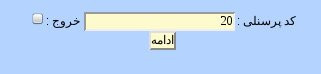
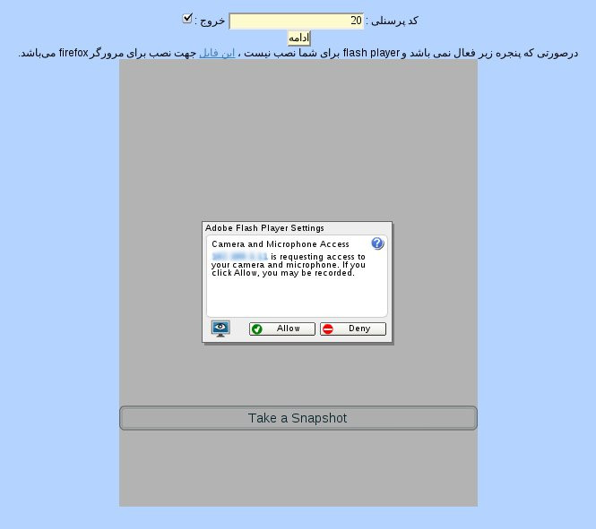
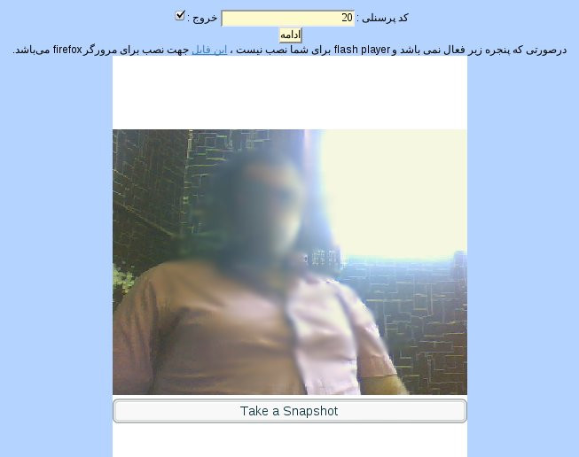
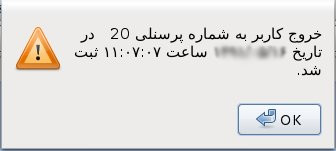

۱- ثبت ورود و خروج
این پنل به منظور ثبت ورود و خروج کارمندان مجموعه طراحی گردیده است. برای ثبت ورود ابتدا کد پرسنلی را وارد نمایید و بر روی ادامه کلیک کنید.

در کادر نمایش داده شده پیغامی مبنی بر اجازه ی اجرای flash player مشاهده می نمایید. بر روی دکمه allow کلیک نموده تا تصویر خود را در کادر طراحی شده مشاهده کنید.


با کلیک بر روی take a snapshot از عکس مورد نظر گرفته و ذخیره می شود و پیغامی مبنی بر ثبت ورود یا خروج نمایش داده می شود.

برای ثبت خروج ابتدا باید بر روی تیک خروج کنار کادر کد پرسنلی کلیک نمایید.